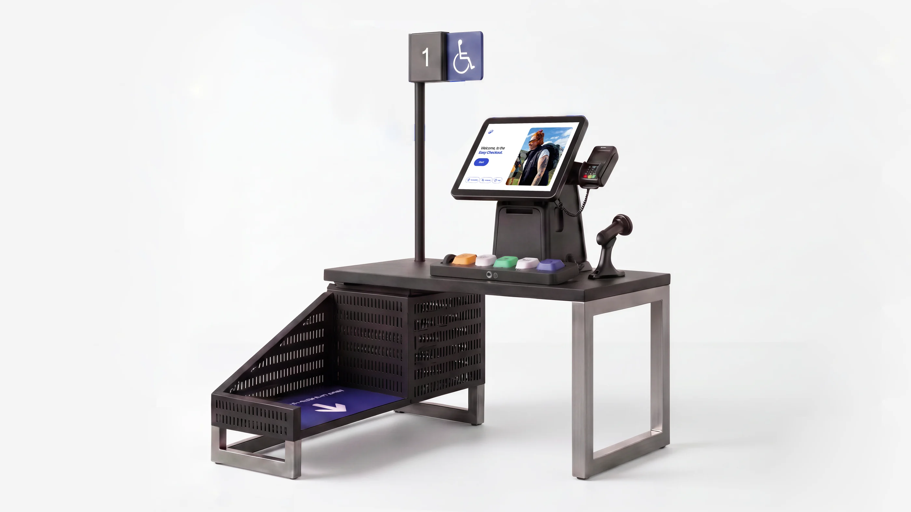
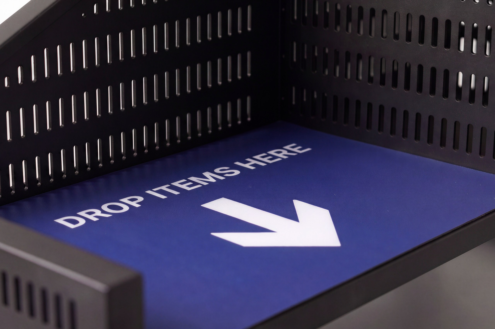
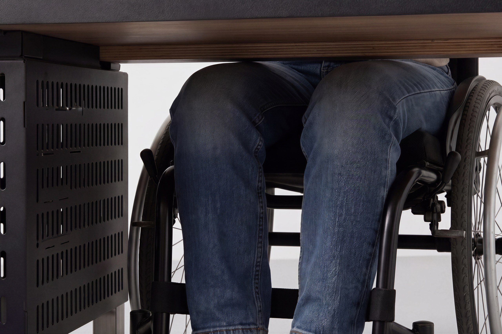
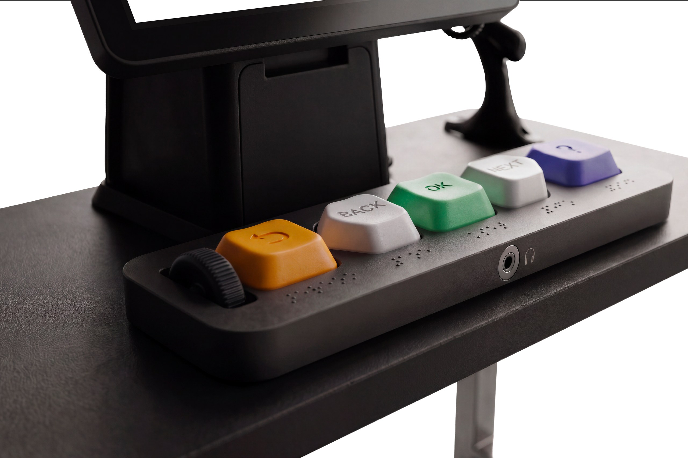
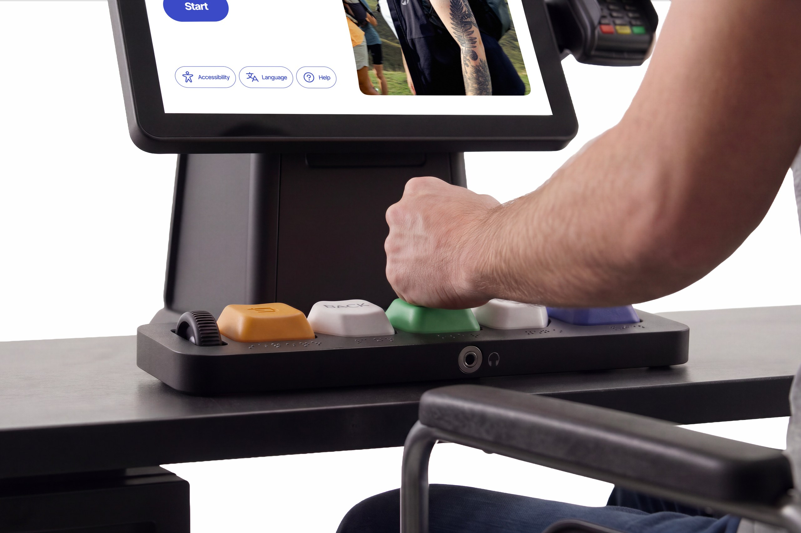

Easy-Checkout
Making self-checkouts accessible.
2026
The problem.
200,000 self-checkouts were installed in 2023. For people with limited hand mobility, low vision or a wheelchair, they are hard to use.
With Decathlon, I asked: how might we make self-checkout accessible to everyone?
Introducing
Easy-Checkout

The digital
experience.
A calmer, clearer screen: one step per page, big buttons, high contrast.
It reads itself aloud. Audio, contrast, text size, 15 languages and a Help button are always one tap away.
Try the screen.
Now, the physical side.
The physical
experience.
A low drop-off bay, so nothing is lifted high, and leg space for a wheelchair.
The Easy Pad: five big tactile keys. No touchscreen needed.




Try the Easy Pad.
The Process.
How I made Easy-Checkout.
Thanks for checking it out.